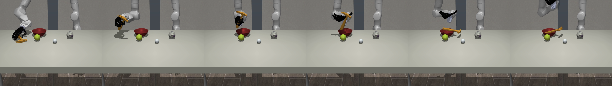

← dashboard · demo 1: hammer-nail
Single right hand, same closed-loop S0 + S2 pipeline, on HandsOn's ball-to-bowl scene (bowl placed in the arm's workspace). S0 grasps and lifts its object; S2 composes the carry, a drop from just above the rim, the release, and the retreat. The object lands in the bowl, 4 mm from its center, bowl undisturbed.

Releasing a long object turned out to be its own skill. Opening the fingers straight leaves it hooked on the thumb web — it rides the hand through tilts, dumps and shakes. Placing it down into the bowl tips the light bowl, which dumps it back out. The recipe that works: carry to a pose where the object's lowest point hangs just above the rim, open to a maximal splay (thumb swung wide), let it free-fall the last few centimetres, then retreat laterally at constant height (an upward retreat drags a leaning object back out), and only then rise.
Selection lesson from the misses: a 25 mm ball's capture window is smaller than the arm's execution error (it gets batted away), and clip choice must be atlas-first — replaying a reference that was marginal in S0's own simulator cannot survive transfer. The S2 capability Atlas built in the boundary-exploration phase is exactly the index that answers "which skill instances are robust enough to deploy."
Co-simulation + S2 composer: handson_bridge/cosim.py (ARENA/RECIPE/TASK=place),
branch jd/mixed-s0-s2. Demo 1 (hammer-nail strike) is here.